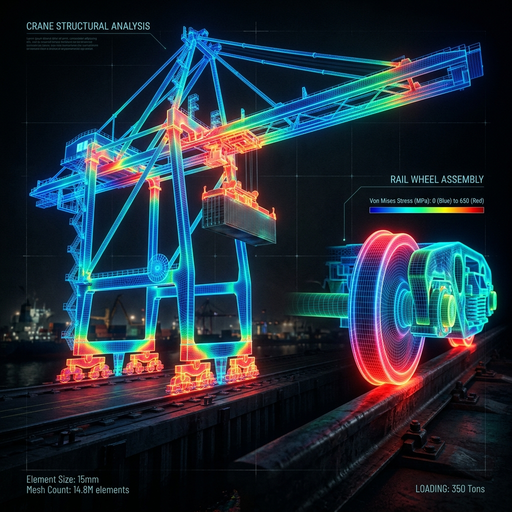

A comprehensive study involving Modal Analysis on a rail wheel and Finite Element Analysis (FEA) on a harbor crane to assess structural and dynamic responses.
I processed frequency domain data from impulse tests using least square error minimization to perform the modal analysis of the rail wheel. For the harbor crane, I conducted a full FEA simulation in MATLAB/Python to determine its natural frequencies, mode shapes, and its structural integrity when subjected to dynamic and static moving loads.
View on GitHub